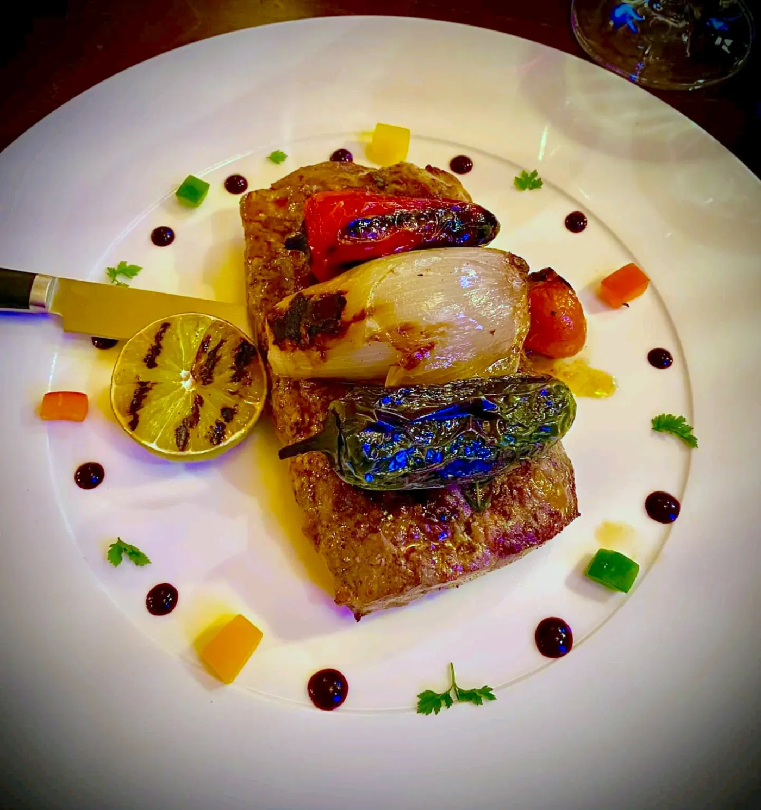
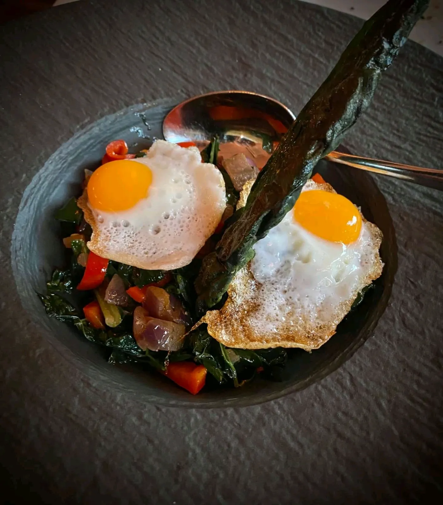
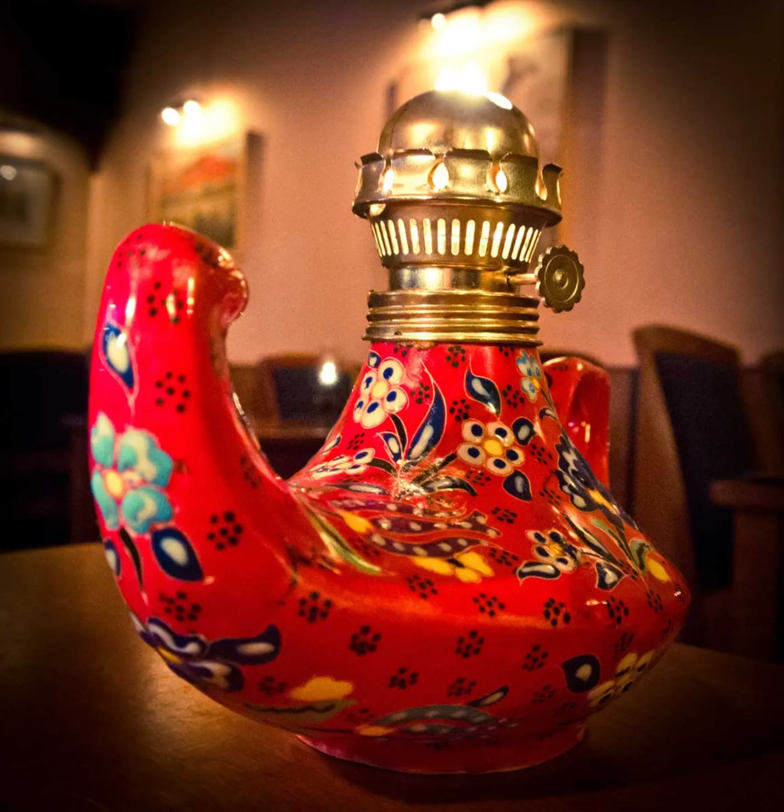
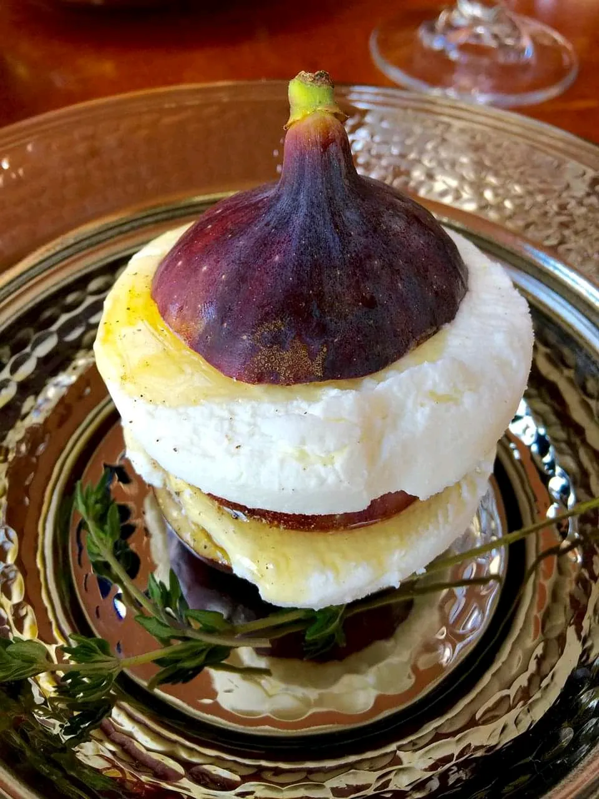
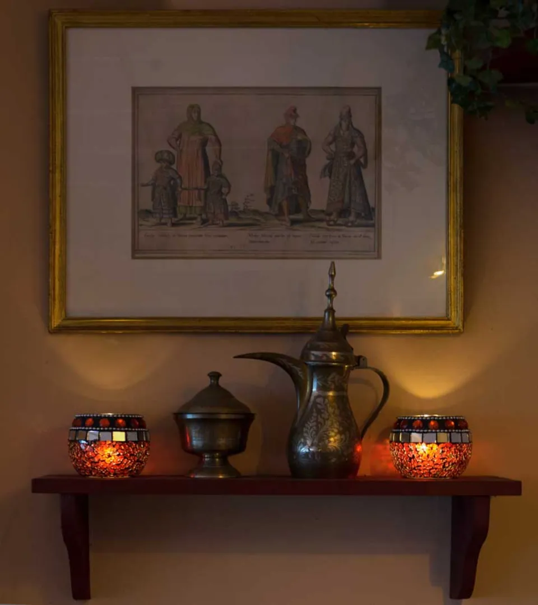
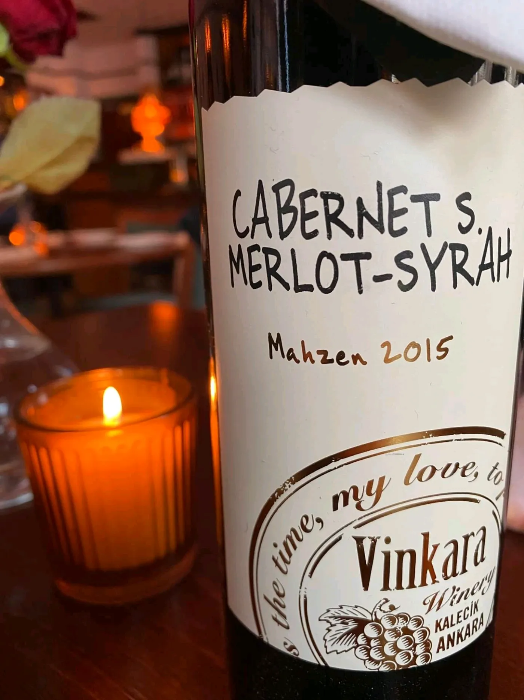
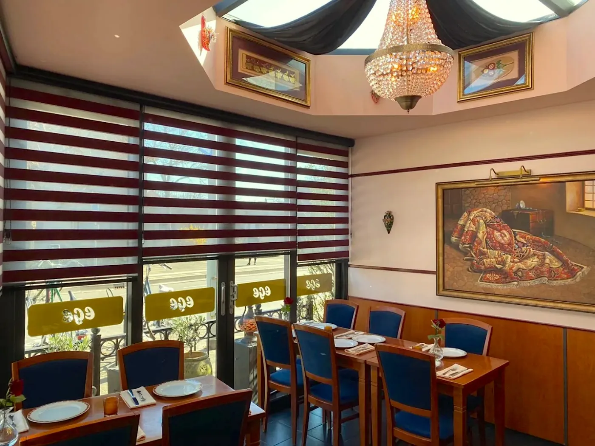

Rivierstraat 36, Eindhoven
Turks Restaurant Ege
Eeuwenoude Turkse recepten, bereid met vers vlees, verse groenten, fruit en kruiden. Met de tijd die ze nodig hebben.
Dinsdag t/m zondag van 17.00 tot 22.00 uur





Welkom bij Ege
Voor fijnproevers is de Turkse keuken zonder twijfel één van de rijkste ter wereld. Veel recepten zijn eeuwenlang van generatie op generatie overgeleverd en beïnvloed door vele culturen.
Voor het zo smakelijk mogelijk bereiden van Turkse gerechten is tijd nodig. Wij werken uitsluitend met vers vlees, verse groenten, fruit en kruiden, en gebruiken geen geur-, kleur- of smaakversterkers. Dat betekent dat het uitserveren wat langer kan duren dan u in een gemiddeld restaurant gewend bent.
Tijdens uw diner luistert u naar rustige Turkse muziek. Het personeel van restaurant Ege wenst u smakelijk eten!
Cemil Küçükosmanglu
- Vers en zonder haastAlles wordt vers bereid, zonder smaakversterkers. Neem er de tijd voor.
- Reserveren gaat telefonischOm teleurstelling te voorkomen kunt u het beste even bellen: 040 - 257 33 79.
- Met een groep?Vanaf 6 personen adviseren wij een groepsmenu. Op maandag kan een groep van meer dan 10 personen in overleg.
Turkse wijnen
Restaurant Ege schenkt karaktervolle wijnen, die door het gunstige klimaat van Turkije een hoge kwaliteit hebben. De wijnen winnen regelmatig prijzen op internationale concoursen.
Op de kaart staan ook echte Turkse druiven, zoals Öküzgözü, Boğazkere, Kalecik karası en Narince. Tik op een wijn voor kleur, geur en smaak.

Turkse bubbels
- Altın Köpük, witte bubbels extra brutEmir, Turkse lokale druiven€ 6,95€ 35,50
- Altın Köpük, roze bubbels extra brutEmir, Turkse lokale druiven€ 6,95€ 35,50
- Yaşasın, witte bubbels extra brutKalecik karası, Turkse lokale druiven. Natuurstijl, binnen 3 jaar in de fles gefermenteerd–€ 69,50
- Yaşasın, roze bubbelsKalecik karası, Turkse lokale druiven. Natuurstijl, binnen 3 jaar in de fles gefermenteerd–€ 69,50
Turkse wijn van het huis
- Yakut, roodÖküzgözü, Boğazkere€ 5,95€ 27,50
- Çankaya, witNarince, Emir, Sultaniye€ 5,95€ 27,50
- Sultaniye, zoete witte wijnSultaniye€ 5,95€ 27,50
- Ancyra, roodSyrah, Cabernet Sauvignon uit Turkije€ 6,95€ 29,50
- Ancyra, roséÇal karası€ 6,95€ 29,50
- Ancyra, witSauvignon Blanc uit Turkije€ 6,95–
- Egeo, roodSyrah uit Turkije€ 7,75€ 34,50
- Egeo, witSauvignon Blanc uit Turkije€ 7,75€ 34,50
- Egeo, witChardonnay uit Turkije€ 7,75€ 34,50
Prijzen per fles
Côtes d’Avanos Sauvignon BlancSauvignon Blanc€ 52,50
- Kleur
- Heldergeel
- Geur
- Complex en uitgesproken, met steenvruchtaroma’s en bloemige noten.
- Smaak
- Gestructureerd en persistent, rijke aroma’s met een mooi evenwicht, opmerkelijke mineraliteit en een lange afdronk.
Côtes d’Avanos Narince-ChardonnayNarince, Chardonnay€ 52,50
- Kleur
- Helder, goudachtig geel
- Geur
- Complex, met citrusvruchtaroma’s, honing, bloemen en vanilletoetsen.
- Smaak
- Vol en elegant karakter met rijke aroma’s, goede aciditeit en een ronde, romige, lange afdronk.
- Rijping
- 9 maanden gefermenteerd en gerijpt op Franse eikenhouten vaten van 225 liter, volgens de “élevage sur lies”-methode.
VinkaraRezerve Narince100% Narince€ 49,50
- Kleur
- Strogeel met goudgele reflectie
- Geur
- Bloemige en fruitige aroma’s.
- Smaak
- Abrikoos, boterachtige aroma’s, tonen van karamel en zoethout, en een lange afdronk.
- Rijping
- 14 maanden gerijpt in Franse Bourgondische eikenhouten vaten van 225 liter.
Prestige NarinceNarince€ 49,50
- Kleur
- Heldergeel
- Geur
- Rijk, met citrusvrucht en aroma’s van gele bloemen.
- Smaak
- Vol en mooi gebalanceerd, met een karakter van rijke aroma’s en een lange, elegante afdronk.
- Rijping
- 9 maanden gefermenteerd en gerijpt in Franse eikenhouten vaten van 225 liter, volgens de “élevage sur lies”-methode.
Egeo Sauvignon BlancSauvignon Blanc€ 34,50
- Kleur
- Heldergeel
- Geur
- Intens, met verse tropische fruitaroma’s en een variatie aan toetsen.
- Smaak
- Mooi gebalanceerd, met persistente fruitaroma’s en een scherpe aciditeit.
Egeo ChardonnayChardonnay€ 34,50
- Kleur
- Heldergeel
- Geur
- Intense perzik- en wittebloemaroma’s met een goed geïntegreerde eikentoets.
- Smaak
- Elegant, gestructureerd en mooi gebalanceerd, met persistente fruitaroma’s en een scherpe aciditeit.
- Rijping
- 9 maanden gefermenteerd en gerijpt in Franse eikenhouten vaten van 225 liter.
Selection Narince-EmirNarince, Emir€ 32,50
- Kleur
- Helder, goudachtig geel
- Geur
- Rijk, met aroma’s van citrusvrucht en wit fruit, boterachtige toetsen.
- Smaak
- Elegant, romig en geconcentreerd, met een lange afdronk van minerale toetsen.
- Rijping
- 9 maanden gerijpt in Franse eikenhouten vaten van 225 liter.
Ancyra Sauvignon BlancSauvignon Blanc uit Turkije
- Kleur
- Heldergeel
- Geur
- Intens, met aroma’s van groene appel, limoen en peer.
- Smaak
- Mooi gebalanceerd, met matige aciditeit, persistente smaken en een minerale toets.
ÇankayaNarince, Emir, Sultaniye€ 24,50
- Kleur
- Heldergeel
- Geur
- Uitgesproken, met aroma’s van citrusvrucht en wit fruit.
- Smaak
- Heerlijk, met persistente fruitsmaken, geconcentreerd en mooi gebalanceerd, met een matige aciditeit.
Prijzen per fles
Pendore SyrahSyrah€ 52,50
- Kleur
- Donkere pruimkleur met lichte kersschakeringen
- Geur
- Rijk en complex, met donkerrood fruit, zwarte olijven en zoete kruidenaroma’s met violette toetsen.
- Smaak
- Vol en diep, met rijke tannine en een lange afdronk met persistente aroma’s.
- Rijping
- 10 maanden gerijpt in Franse eikenhouten vaten van 225 liter.
Pendore ÖküzgözüÖküzgözü€ 52,50
- Kleur
- Donkere robijnkleur met fuchsiatinten
- Geur
- Complex, met donkerrood fruit zoals rode pruimen, en kruidenaroma’s.
- Smaak
- Diep, met rijke tannine, een volle en lange afdronk, matige aciditeit en rijke aroma’s.
Côtes d’Avanos TempranilloTempranillo€ 52,50
- Kleur
- Diep granaatrood met pruimtinten
- Geur
- Complex en intens, met rode bosvruchten, kastanje en tabak, en een nootachtige toets.
- Smaak
- Vol, met stevige tannine, diep en charmant, met een lange afdronk en persistente aroma’s.
- Rijping
- 12 maanden gerijpt in Franse eikenhouten vaten van 225 liter.
Prestige Kalecik KarasıKalecik karası€ 49,50
- Kleur
- Robijnkleur met rode tinten
- Geur
- Uitgesproken, met rode vruchtaroma’s zoals kers, en toetsen van rozenbottel.
- Smaak
- Intense en persistente aroma’s, mooi gebalanceerd met zachte tannine en een elegante, lange afdronk.
- Rijping
- 7 maanden gerijpt in Franse eikenhouten vaten.
Prestige ÖküzgözüÖküzgözü€ 49,50
- Kleur
- Donkere kerskleur met fuchsiatinten
- Geur
- Complex, met gedroogd rood fruit, zoete kruidenaroma’s zoals gember en elegante eikentoetsen.
- Smaak
- Diep, met rijpe tannine, geconcentreerd en elegant, met een lange afdronk en persistente aroma’s.
- Rijping
- 10 maanden gerijpt in Franse eikenhouten vaten van 225 liter.
Prestige BoğazkereBoğazkere€ 49,50
- Kleur
- Granaatrood met robijntinten
- Geur
- Complex, met aroma’s van gedroogd rood fruit en kruidige toetsen.
- Smaak
- Vol, met een mooi gebalanceerde stevige tannine en een lange afdronk.
- Rijping
- 10 maanden gerijpt in Franse eikenhouten vaten van 225 liter.
VinkaraGrand Rezerve Azılı Boğazkere100% Boğazkere€ 49,50
- Kleur
- Intens robijnrood met granaatreflecties
- Geur
- Gerookte, geroosterde amandelen en rood fruit.
- Smaak
- Rijk aan aroma’s van zoethout en leer. Diep, met rijke tannine, volle vanille, donkere chocolade en een lange afdronk.
- Rijping
- 30 maanden gerijpt in Franse eikenhouten vaten van 225 liter.
VinkaraRezerve Cabernet Sauvignon-Merlot-Syrah55% Cabernet Sauvignon, 30% Merlot, 15% Syrah€ 44,50
- Kleur
- Donkere robijnkleur met fuchsiatinten
- Geur
- Complex, met donkerrood fruit zoals rode pruimen, en kruidenaroma’s.
- Smaak
- Diep, met rijke tannine, een volle en lange afdronk, matige aciditeit en rijke aroma’s.
- Rijping
- 24 maanden gerijpt in Franse eikenhouten vaten van 225 liter.
Kayra Buzbağ RezervÖküzgözü, Boğazkere€ 39,50
- Kleur
- Levendig donker robijnrood
- Geur
- Geroosterd brood, kersen, pruimen en cederhout.
- Smaak
- Een volle wijn met tannine en intense aroma’s van kersen en rode bosvruchten.
- Rijping
- 24 maanden gerijpt in Franse eikenhouten vaten van 225 liter. Kan tot 15 jaar rijpen.
Egeo Cabernet SauvignonCabernet Sauvignon€ 34,50
- Kleur
- Granaatrood met robijntinten
- Geur
- Complex, met donkerrode bosvruchten en zoete kruidenaroma’s.
- Smaak
- Vol, met rijpe tannine, persistent en mooi gebalanceerd, met een lange afdronk.
- Rijping
- 8 maanden gerijpt in Franse eikenhouten vaten van 225 liter.
Egeo Cabernet Sauvignon-MerlotCabernet Sauvignon, Merlot€ 34,50
- Kleur
- Granaatrood met robijntinten
- Geur
- Intens, met zwarte bosvruchten, kruidenaroma’s en tabakstoetsen.
- Smaak
- Vol en complex, met rijpe tannine, persistent met kruidensmaak en een lange afdronk.
- Rijping
- 8 maanden gerijpt in Franse eikenhouten vaten van 225 liter.
Egeo SyrahSyrah€ 34,50
- Kleur
- Zwartachtig granaatrood
- Geur
- Complex, met zwarte bosvruchten, zoete kruiden en zwarte olijven.
- Smaak
- Geconcentreerd en vol, met een uitgesproken aciditeit en een persistente, lange afdronk.
- Rijping
- 8 maanden gerijpt in Franse eikenhouten vaten van 225 liter.
Selection Öküzgözü-BoğazkereÖküzgözü, Boğazkere€ 32,50
- Kleur
- Levendig diep granaatrood met donkerrode tinten
- Geur
- Complex, met kruiden en gedroogd rood fruit.
- Smaak
- Rijk, met smaken van geïntegreerd eiken, toast en gedroogd fruit; vol en lang, met stevige tannine.
- Rijping
- 12 maanden gerijpt in Franse eikenhouten vaten.
Ancyra ÖküzgözüÖküzgözü€ 27,50
- Kleur
- Helder kersrood
- Geur
- Intens, met rood fruit zoals rode pruimen en zure kersen.
- Smaak
- Heerlijk en sappig, mooi gebalanceerd met goede aciditeit en structuur, rond met zachte tannine.
Ancyra BoğazkereBoğazkere€ 27,50
- Kleur
- Helder fuchsia
- Geur
- Intens, met rood fruit en een toets van viooltjes.
- Smaak
- Rond, geconcentreerd, mooi gebalanceerd en heerlijk, met zachte tannine.
Ancyra Cabernet Sauvignon-SyrahCabernet Sauvignon, Syrah€ 27,50
- Kleur
- Levendig, diep zurekersrood
- Geur
- Rijk aan aroma’s van rode bosvruchten en kruiden.
- Smaak
- Zachte tannine, mooi gebalanceerd, met frisse aciditeit en een lange nasmaak.
YakutÖküzgözü, Boğazkere, Carignan, Alicante€ 24,50
- Kleur
- Helder en intens kersrood
- Geur
- Intense aroma’s van rood fruit zoals pruimen, zure kersen en zwarte moerbeien, met violette toetsen.
- Smaak
- Rijke smaken, geconcentreerd en mooi gebalanceerd met rijpe tannine.
Prijzen per fles
Egeo RoséÇal karası, Syrah, Grenache€ 32,50
- Kleur
- Helder zalmroze
- Geur
- Uitgesproken, met witte kersaroma’s en een frisse bloementoets.
- Smaak
- Rijk, persistent en mooi gebalanceerd, met een scherpe aciditeit die zorgt voor een mooie concentratie.
Ancyra BlushKalecik karası€ 27,50
- Kleur
- Helder zalmroze
- Geur
- Intens, met aroma’s van frambozen, nectarine en gekonfijte kersen.
- Smaak
- Mooi gebalanceerd met charmante smaken, fris, rond en persistent.
LalÇal karası€ 24,50
- Kleur
- Helder licht zalmroze
- Geur
- Uitgesproken, met aroma’s van vers rood fruit zoals aardbeien en frambozen.
- Smaak
- Intense en persistente aroma’s, mooi gebalanceerd en rond.
De wijnkaart als PDF: Nederlands English wine list
Dineren in een huiselijke sfeer
Het restaurant is gehuld in authentieke sferen, geheel in lijn met de gerechten die er geserveerd worden. De bediening staat altijd klaar voor speciale vragen; met plezier doen wij ons best.

Recensies over Ege verschenen onder andere in het Eindhovens Dagblad en het Brabants Dagblad, en op Iens, Eetnu, Smulweb en Tripadvisor.
Reserveren
Reserveren gaat uitsluitend telefonisch. Bel ons gerust, ook voor groepen of speciale wensen.
040 - 257 33 79Openingstijden
| Maandag | gesloten* |
|---|---|
| Dinsdag | 17.00 – 22.00 |
| Woensdag | 17.00 – 22.00 |
| Donderdag | 17.00 – 22.00 |
| Vrijdag | 17.00 – 22.00 |
| Zaterdag | 17.00 – 22.00 |
| Zondag | 17.00 – 22.00 |
* Een reservering voor meer dan 10 personen kan op maandag in overleg.
Adres
Turks Restaurant Ege
Rivierstraat 36
5615 KB Eindhoven
Turkse delicatessen bij Ekin
Voor uw Turkse delicatessen kunt u naar onze winkel Ekin, schuin tegenover het restaurant.
Gestelsestraat 49, 5615 LA Eindhoven
040 - 237 53 95